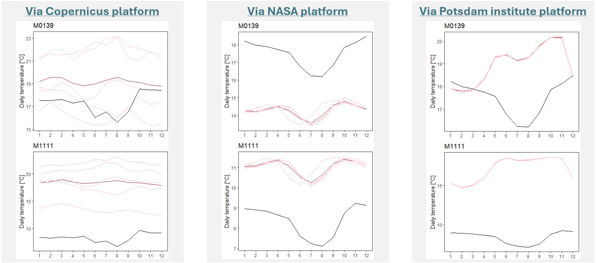
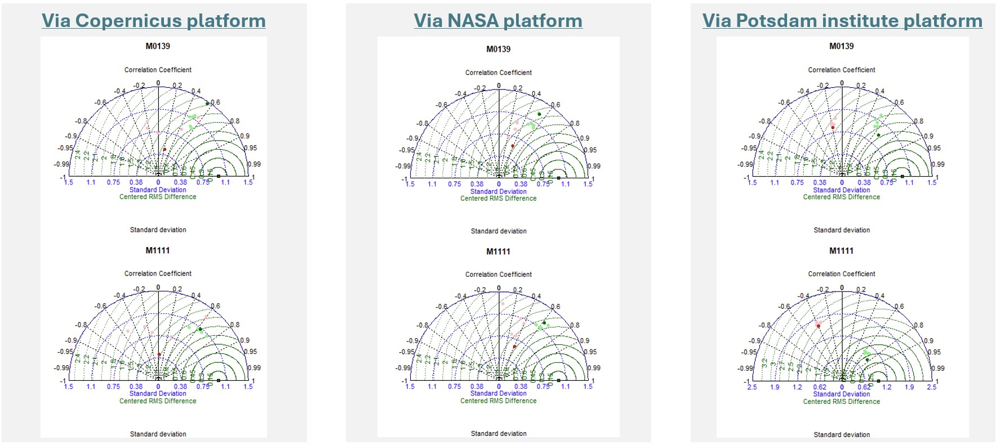
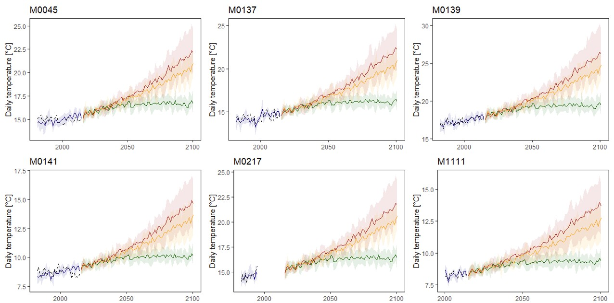
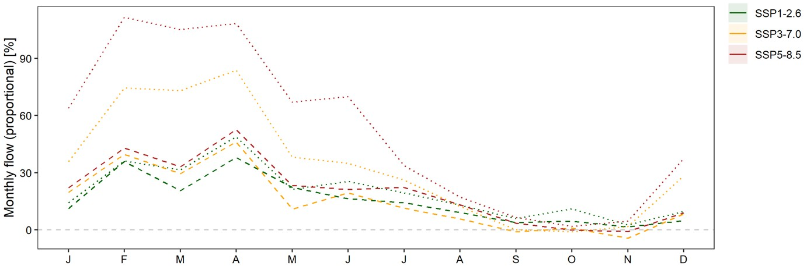

Future flows
At this point, it can be stated that the developed hydrological model "works" for past conditions and simulates the observed flows. In the future, hydrological patterns might shift because of climate change. Determining how the system would respond to these changes is essential to developing appropriate management strategies. To do so, the following steps have to be taken: (1) select data, (2) prepare data, and (3) use new data for modelling flows.
Data availability
A common source of data to simulate future flows is the CMIP6 from the IPCC. Within those data sets both historical and future precipitation (and other meteorological conditions) are reported. The future conditions are even available for a variety of scenarios related to future greenhouse gas emissions. Moreover, various models are available to simulate such conditions. This leads to a typical assessment of the individual models (e.g., around 10) and the ensemble of the individual models. Each of these models has a different spatial resolution, hence requiring that the data is (stochastically) downscaled to a finer resolution. The temporal resolution can vary as well, though daily values are typical.
One of the sources to download this CMIP6 data from, is the Copernicus website (the “CMIP6 climate projections” data set), though these are at the original model resolution. This means that, if a model has a spatial resolution of 0.9°, maximally 4 grid points would be situated within the 'wider Paute river basin' (covering about 1° x 1°), thus definitely requiring downscaling. It is also possible to go to the original source of the CMIP6 data and consult some background information as well as download the data. Yet, this requires a good knowledge of the used models and naming in order to select appropriate models and the right files. Similar to the Copernicus data, these are global grids and need both downscaling and bias adjustment.
Data sets of the whole world and for various meteorological variables that already underwent bias correction and downscaling can be downloaded from the NASA server (the “NEX-GDDP-CMIP6” series; daily resolution at 0.25° spatial resolution; 35 models; several variables), associated with the data descriptor paper of Thrasher et al. (2022). Alternatively, a subset of bias adjusted stochastically downscaled (BASD) simulations (daily resolution at 0.1° spatial resolution; 10 models; precipitation and temperature) can be downloaded from the Potsdam institute webpage, associated with the data descriptor paper of Fernandez-Palomino et al. (2024). Also, the Ecuadorian government has a webpage with projections of future climate conditions, though this does not seem to be useful for the project at hand.
Data selection
Prior to selecting one specific data source for simulating future climate conditions, an assessment of these simulations is appropriate. To do so, a set of 5 models from each data source is selected to assess its accuracy against observed conditions. Starting from the most limited set of models (from BASD), the following models are selected: CNRM-ESM2-1, GFDL-ESM4, IPSL-CM6A-LR, MIROC6, and MRI-ESM2-0 (UKESM1-0-LL uses a fixed '30-day per month' assumption, EC-Earth3 is not available in Copernicus, MPI-ESM1-2-HR only provides historical data, and CanESM5 was observed to be the worst in BASD).
The accuracy assessments are made for mean daily temperature levels, which is an important player in simulating rainfall and often considered to be easier to simulate than rainfall (or the extremes). More specifically, daily data will be used for additional simulations, though the actual accuracy assessment is made on the basis of monthly averages. The assessments are made through Taylor diagrams and seasonal patterns (again, using averages). The graph below illustrates the difference in seasonal patterns between the three data sources (5 models in pink, an ensemble in red, and observations in black) for two meteorological stations. At first glance, the NEX data set (from the NASA platform) might be more appropriate, due to it including a better representation of the seasonal temperature cycle. Yet, its spatial resolution is coarser (0.25° x 0.25°) than the BASD data set (0.1° x 0.1°). This makes that some stations share the same grid point simulations, which is less common for the BASD data. How this affects the subsequent bias correction results needs to be investigated further.

Bias correction for each of the 5 models is performed against the observed temperature data and through the use of Quantile Mapping (QM). Through the implementation of QM, it is possible to align the distribution-related statistics of the simulated data with the observed data. To assess the performance of this approach, the data is split up in a 70:30 ratio into a training and validation data set, respectively. From the corrections of the three different data sets, it can be inferred that the original spatial resolution of the data is influential on the final result. All corrections led to more or less similar statistics (SD, correlation, RMSE ratio) and seasonal patterns, though with slightly better results for BASD (from the Potsdam platform). The graph below illustrates the similarity between the three data sources through Taylor diagrams (5 original models in pink, its ensemble in red, 5 corrected models in light green, its ensemble in dark green, and observations in black) for two meteorological stations. Hence, subsequent steps will be made with the BASD data.

Data preparation
The goal of the simulations is to obtain a (set of) simulated time series of temperature and precipitation (and, if necessary, other variables) that can be used in the hydrological model. This means that the simulations have to be aligned with the observations, for which the following elements have to be taken into account:
- A spatiotemporal analysis of changing temperature and precipitation patterns can be made, but this requires a bias correction at grid level. Considering the (sometimes extensive) amount of missing data and the small scale of the basin, this might not be feasible. For instance, the basin covers only about 1° longitude and 1° latitude, which makes that grids have to be downscaled greatly (as original resolution is often around 1-2°) and even a 10x10 grid (at 0.1° resolution) might not give sufficient insight into the spatial patterns. Secondly, only half the basin is characterized by being covered by meteorological stations, which limits any bias correction in the other half of the basin. Moreover, most of these stations do have quite some missing data, which would require some kind of imputation (which might disturb the original distribution) prior to deriving a gridded time series of observed conditions. A spatiotemporal analysis is therefore considered not feasible with the observed data at hand.
- A temporal analysis in specific locations can be performed, as gridded simulations can be translated to point-specific time series. Here as well, bias correction is necessary and can be performed at each point individually, based on the overlapping time points in which observed data is available. This would not require any imputation of data. For stations without any data, a similar approach as with the observed data preparation for SWAT+ analysis can be used. An important question that pops up here, is related to the choice of the (simulated) data. Based on the analyses of previous section, a point-specific bias correction of the simulated time series will therefore be performed with the BASD data.
Bias correction
Following the selection of (1) an appropriate data set with simulations of future climatic conditions and (2) the type of analysis, we have ended up at the point of extracting station-specific time series from the BASD grid and correcting these series via QM. Following this correction, we can obtain an idea of what future conditions will look like. In this aspect, it is important to keep in mind that the BASD data represents simulations under three distinct shared socio-economic pathways: (1) SSP1-2.6, (2) SSP3-7.0, and (3) SSP5-8.5. Between these series, SSP1-2.6 is a green sustainability path with low emissions, SSP3-7.0 is a regional rivalry path with high emissions, and SSP5-8.5 is a fossil-fueled development path with very high emissions. The graph belows illustrates the corrected simulations of the different scenarios for a selection of six stations, depicting a clear increase in average daily temperature by the end of the century. In this graph, the shared socio-economic pathways (SSPs) are depicted in red (SSP5-8.5), orange (SSP3-7.0), and green (SSP1-2.6), while the solid lines depict the ensemble and are complemented with the range of the underlying individual models as coloured ribbons.

Scenario development
With the simulated data being generated, the next step is their preparation for the SWAT+ model. For this, two periods are considered: near future (2031 - 2060, including 10 years for model warming) and far future (2071 - 2100, including 10 years for model warming). This results in a minimum of 6 additional scenarios, for which separate climate data needs to be derived. Since the BASD data only contains information on temperature and precipitation, it is assumed that climatic conditions of wind, humidity, and radiation will be similar in the future (hence, similar climatic conditions and empty time series). As such, additional preparations are only necessary for precipitation and temperature.
Observed precipitation data is available for almost all stations, hence there is an acceptable base for performing the adjustment of the simulations to be in line with the station-specific dynamics. For stations without any (or insufficient) observed data, the closest weather station is determined and the ratios of the characteristic climate statistics are used to calculate the point-specific conditions.
Observed temperature data is less widespread than precipitation, hence several stations will be characterised by simulated patterns that have not been corrected adequately. For those stations without observed data, the ratio in historical climatic conditions with the closest station with observed data is used to calculate monthly climate conditions.
Flow simulations
Following the definition of the different climatic conditions, the developed SWAT+ model is used to derive potential future flow conditions in a selection of stations. For each of the scenarios, the model parameters are maintained fixed and only the climate conditions differ (i.e., only temperature and rainfall). For our project in the Paute river basin, we are especially interested in changes in the discharge into the reservoir (and, thus, the potential for energy generation). Based on our simulations, we can describe the expected changes of this flow in both the near- and far future under a range of scenarios. The graph below illustrates the outcome of the simulated river flow directly upstream of the Mazar reservoir for the near (dashed) and far (dotted) future. It shows an overall increase in monthly flow during the wet season (February-May) and more or less similar conditions during the dry season (August-November). This means that more investments are needed to protect societies from floods and powerful rainfall during the dry season, while alternatives for energy provisioning are necessary during the dry season (given the between-year variability and absence of a clear increase in monthly rainfall).
